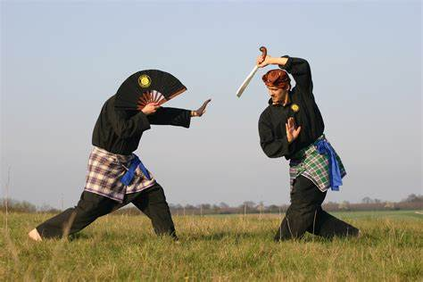
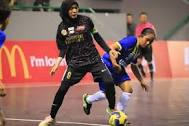
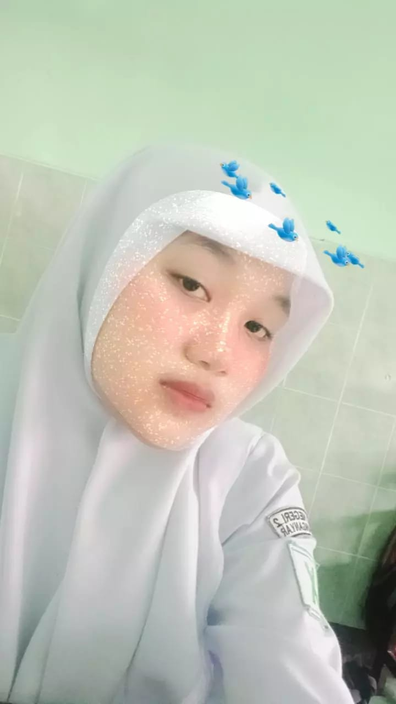

Bakat Saya

Pencak Silat
Saya memiliki bakat pencak silat, karena dengan memiliki bakat pencak silat agar bisa menjaga diri dari orang orang jahat.

futsal
Saya memiliki hobi futsal karena dapat menyehatkan tubuh.
Riwayat Pendidikan Shafa Ashimah Putri
Riwayat Pendidikan
Karir
2022-2025 = SMKN 2 Karanganyar.
2019-2022 = SMPN 4 Karanganyar.
2013-2019 = SDN 1 Cangakan.
2011-2013 = TK Aisyah Mutiara Hati

My Quotes
“Janganlah menganggap remeh hal-hal yang terdekat dengan hati kamu. Rangkullah mereka seperti sama berharganya dengan hidupmu, karena tanpa mereka hidup adalah sia-sia”
“"Di dunia ini ada tiga hal yang paling dibenci oleh orang, yaitu otak kosong, omong kosong, dan dompet kosong.".”